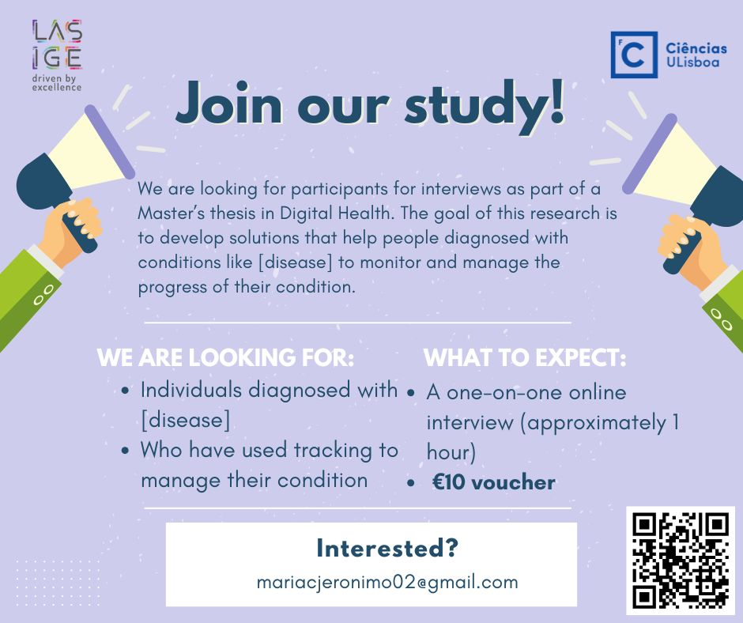
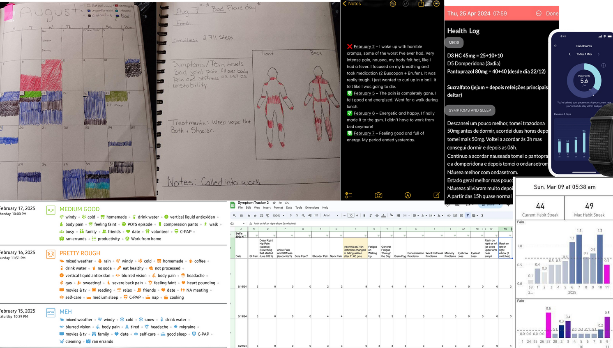

Understanding Self-Tracking Practices in Enigmatic Disease Management
A research project exploring how to design tools that better support people living with enigmatic diseases as they manage their condition over time.
The Problem
Self-tracking tools are often built around the assumption that tracking the “right” health variables will lead to actionable insights and greater control over one’s health. Yet, it remains unclear how these assumptions hold up in contexts marked by uncertainty, unpredictability, and frequent fluctuations in health needs, such as those experienced in enigmatic conditions.
For context, Enigmatic Diseases are defined as:
Chronic
Multifactorial nature
Poorly understood
Individual experiences
Fluctuations
Emotional burden
Some examples include: Crohn’s disease, Ulcerative Colitis, Endometriosis, Rheumatoid Arthritis, ...
The Ideia
Previous Work
- Most studies focused on a single diagnosis, tailoring tools for specific conditions.
- These efforts emphasize what to track and how such data might inform a broader understanding of a particular enigmatic disease.
- While effective, this approach may overlook broader, shared experiences across diseases.
Our Approach
- Focus on when and why people track.
- Include multiple enigmatic diseases to identify commonalities and contrasts in tracking needs.
- Explore how these needs evolve over time as individuals manage their conditions.
Methodology
Recruitment
Recruitment was carried out through multiple complementary channels.
- We posted targeted study invitations in disease-focused Facebook groups
and Reddit communities,
- and worked with local patient associations,
who disseminated our call through mailing lists, WhatsApp groups,
and online networks.

Participants
Eligibility criteria:
We were looking for individuals formally diagnosed with at least one enigmatic condition and, who had engaged in any form of self-tracking at least once in relation to their condition.
Demographics
| Id |
Age |
Gender |
Occupation |
Country of Origin |
Enigmatic Diseases and Age of Diagnosis |
| P1 | 30 | F | Student | Portugal | Ulcerative Colitis (28); Axial Spondyloarthritis (axSpA) (28), Migraine (Childhood) |
| P2 | 31 | F | Unemployed | Portugal | Crohn's Disease (18); Endometriosis (under investigation) |
| P3 | 40 | F | Freelancer | Portugal | Endometriosis (39) |
| P4 | 24 | F | Receptionist | Canada | Fibromyalgia (16) |
| P5 | 35 | F | Unemployed | Portugal | Ulcerative Colitis (23); Hashimoto's Thyroiditis (23) |
| P6 | 48 | F | Unemployed | Portugal | Ulcerative Colitis (19); Lupus (21) |
| P7 | 27 | F | Student | Portugal | Crohn's Disease (22) |
| P8 | 40 | F | Association President | Portugal | Endometriosis / Adenomyosis (23) |
| P9 | 30 | F | Company Employee | Portugal | Endometriosis (27), Behçet’s disease (27), Autoimmune Neurological Disease (under investigation) |
| P10 | 30 | F | Real Estate Manager | Portugal | Ulcerative Colitis (15) |
| P11 | 44 | F | Administrator | USA | Fibromyalgia (35); Rheumatoid Arthritis (under investigation) |
| P12 | 48 | F | Professor | USA | Fibromyalgia (14) |
| P13 | 29 | F | Research Coordinator | Canada | Fibromyalgia (20) |
| P14 | 38 | M | Senior Manager | Canada | Fibromyalgia (38) |
| P15 | 33 | F | Cloud Security Engineer | USA | Fibromyalgia (32); Endometriosis |
| P16 | 49 | F | Writer | USA | Hashimoto's Thyroiditis (47), Fibromyalgia (47) |
| P17 | 39 | M | Marketing | USA | Fibromyalgia (15), Vestibular Migraine (37) |
| P18 | 29 | F | Unemployed | UK | Fibromyalgia (22); Functional Neurological Disorder (FND) (26) |
| P19 | 24 | M | Software Engineer | UK | Psoriasis (12) |
| P20 | 31 | F | Preschool Teacher | Brazil | Rheumatoid Arthritis (30) |
| P21 | 45 | F | Civil Rights Coordinator | USA | Rheumatoid Arthritis (39) |
| P22 | 36 | F | Unemployed | USA | Rheumatoid Arthritis (8) |
| P23 | 30 | F | Dental Implant Liaison | USA | Rheumatoid Arthritis (27), Axial Spondyloarthritis (axSpA) (under investigation) |
Reported Conditions
Functional Neurological Disorder1
Data Collection
Semi-Structured Interviews:
- Total: 23 Interviews.
- Average time: 48 minutes (range: 25–75 min).
- The interview guide was organized around three main themes:
First, participants were asked about
their disease journey, with attention to their diagnostic experiences and early tracking practices.
Second, they reflected on the role of self-tracking during good and bad days, exploring how practices shifted with
changes in disease state. Third, participants were invited to discuss how they reviewed past data, including whether
and how they revisited their data. To support recall and elicit concrete experiences, participants were encouraged to show us
their tracking tools (e.g., apps, journals, spreadsheets) and share any examples of data they considered illustrative of fluctuations
or of good and bad days. Rather than defining these terms in advance, we intentionally left good and bad days open to participants’
interpretation, allowing them to select examples that were personally meaningful and relevant to their lived experiences.
Data Analysis
Codebook thematic analysis approach, combining deductive and inductive coding.
Codebook:
| Codes |
Subcodes |
| Goals |
Relations between variables
Anticipate/Prevent Flare-Ups
Communication with doctors
Doctor’s Request
Diagnosis
Documenting
Was goal achieved?
|
| Tracking Tools |
Why did they choose to use a certain tracking tool?
What data was being tracked?
How did they decide on focusing on that data?
Initial expectations
When did they track
|
| How did tracking change over time? |
Change of tools (tools they were using)
Change of goals (did the goals change over time?)
Change of use (did they use the tools differently?)
Abandonment (why did they stop tracking?)
|
| Tracking Wishes and Challenges |
What challenges did they have with their tools?
What would they like their tools to do?
What did they like about their tools?
|
| Perceptions of Tracking |
How did uncertainty shape tracking?
Views on Tracking (e.g. control)
|
| Fluctuations |
Interpretations of Good Day
Interpretations of Bad Day
How did good/bad days shape the ways they tracked their data?
How was data useful during good/bad days?
How did tracking help during good/bad days?
|
| Reflecting on Data |
Did participants look back on past data?
Why?
How often?
Views
|
Results
What Can Tracking Look Like?
- Digital Tools:
- General Purpose Digital Tools (e.g. Notes App, Spreadsheets) (12 participants)
- Tracking-Focused Tools:
- Digital Applications (e.g. “Flo”) (19 participants)
- Wearables (e.g. “Oura Ring”) (5 participants)
- Paper-Based Tools (e.g. Journals) (7 participants)

| Id |
Current Tools |
Previously Used Tools |
| P1 | Notes App; Calendar App | Clinician-provided Migraine Diary; Symptom Tracking Apps (names not disclosed) |
| P2 | Notes App | — |
| P3 | "Flo" App; Calendar App; Notes App ("Google Keep"); "Notion" Template; "RepCount" App | Food Diary |
| P4 | Journal | Notes App; Symptom Tracking Apps (names not disclosed) |
| P5 | Notes App; Calendar App; Journal | Phone (Medical Trial) |
| P6 | Jornal; "Poopify" App | — |
| P7 | Calendar App | — |
| P8 | "Cocó Feliz: Diário Intestinal" App | Fertility Tracking App (name not disclosed) |
| P9 | Notes App; Journal; "Apple Health" App (Apple Watch) | Period Tracking App |
| P10 | "One Day" App; "Apple Health" App; "AutoSleep" App (Requires Apple Watch); "HeartWatch" App (Requires Apple Watch) | Notes App; ``Notion'' Template |
| P11 | "Daylio" App; Weather App; Sleep App (Requires SmartWatch) | — |
| P12 | Excel Spreadsheet | Journal; Sleep/Ativity Tracking App (Required FitBit); Food Tracking App (names not disclosed) |
| P13 | "HeartWatch" (Requires Apple Watch); "Visible" App; Health Tracking App (name not disclosed) | Bullet Journal |
| P14 | Excel Spreadsheet (Dashboard) | Calorie Tracking App; Smartwatch Apps; Habit-Tracking App; Sleep-Tracking App; Virtual Marathon App (names not disclosed) |
| P15 | — | Notes App; "Welltory: Heart Rate Monitor" |
| P16 | "Oura Ring"; "MakeVisible" App; "Balance" App; "Mindfulness" App; "Omada" App; "Apple Health" App | Apple Watch; Self-Reported Tracking (tool not disclosed) |
| P17 | "AutoSleep" (Requires SmartWatch) App; "AppleFitness" App; "WeatherX" App; "Myshake" App | Excel Spreadsheet |
| P18 | — | Journal; "Daylio" App |
| P19 | — | Pictures |
| P20 | — | "Guava" App |
| P21 | "Visible" App | Journal; Health-Tracking Apps (names not disclosed) |
| P22 | Journal (For Food-Tracking); "Bearable" App; Fitbit | Journal (For Health-Tracking); Health-Tracking Apps (names not disclosed) |
| P23 | "Guava" App | Journal; Health-Tracking Apps (names not disclosed) |
Data
Although participants lived with different chronic conditions, there was a clear convergence in the types of data they considered most valuable to track.
Symptoms
Medication and treatments
Medical documentation
Daily Life
Biometric Data
Interventions
- Symptoms were the central focus of tracking. Nearly all participants (N=21) recorded some aspect of their symptoms, including type, frequency, intensity, or timing (e.g., noting whether pain was worse at specific times of day). For some, this also extended to more qualitative details, such as descriptions of unusual sensations or even photographs to document visible changes (P19).
- Medication and treatment data were the second most common category. Participants tracked dosages, timing, and changes in prescriptions, sometimes also noting when medications were discontinued or running low (P10, P14).
- Medical documentation such as lab results, consultation dates, or hospital visits information was also considered valuable by those who wanted a reliable record of their clinical history (P4, P7, P9).
- Another frequently tracked category involved aspects of daily life that might influence or relate to symptoms. Participants frequently mentioned tracking diet, sleep, emotional states (eg. stress), menstruation, and activity.
- Biometric data (e.g., heart rate, step counts) were less commonly tracked, but participants noted that these measures could be useful in specific conditions.
- Some participants also tracked interventions, including goals, habits they wanted to change, and treatments that helped during flares (P3, P12, P14).
Tracking Goals
We identified five tracking goals across participants:
- Anticipating and Preventing Flare-Ups: Participants tracked to attribute fluctuations and symptoms to potential causes. Since enigmatic diseases are highly individualized and poorly understood, participants often felt compelled to identify what might be driving changes in their symptoms. This included understanding how different behaviors (such as diet and sleep) and environmental factors might exacerbate or attenuate symptom. This goal was particularly salient during periods of uncertainty, such as after medication changes, the onset of new symptoms, or unexpected flare-ups.
We observed two main approaches to attribution: The first, more common, involved recognizing patterns and trends in data. Participants looked back at their data to identify possible triggers, such as diet, weather, or activity.
The second approach was prospective, using tracking to test the effects of specific behaviors or treatments.
- Attributing Fluctuations and Symptoms: Participants also tracked to anticipate flare-ups and take preventive action. In some cases this meant reacting more quickly in the moment by recognizing early warning signs that might otherwise go unnoticed. Tracking in these ways supported moment-to-moment decisions and helped participants respond before symptoms escalated.
For others, anticipation often involved planning around predictable vulnerabilities. P3 used a menstrual calendar to avoid scheduling demanding work during periods of increased symptoms. P11 and P17 adapted travel or work schedules around weather forecasts. These were often lifelong efforts, with participants like P19 describing how tracking his skin responses to surrounding environmental factors helped him strategically time medication applications before social events. These practices highlight how participants built on patterns identified over time, using records not only to react in the moment but also to prepare for the future.
- Ensuring Recognition and Continuity in Care: Tracking was used to support medical consultations, which participants often described as short and infrequent, making it difficult to convey the episodic nature of their conditions. To bridge this gap, participants used their records to show doctors what happened outside the consultation room. Participants relied on tracking to preserve details that might otherwise be lost, particularly during flares when information was overwhelming. Incomplete institutional records added another layer of insecurity, prompting some to keep their own medical histories.
For some, tracking became a tool of self-advocacy. Dissatisfied with their care, they used data to validate concerns or push for changes. This responsibility was often coupled with frustration and the need to “prove” severity. Participants feared that without evidence, their symptoms might be dismissed.
Tracking also provided proof in contexts where patients felt doubted. Because these illnesses are episodic, symptoms were not always visible during medical visits. Records helped participants present a more accurate picture of their condition over time, demonstrating its impact and legitimizing their concerns.
Tracking also helped participants communicate their experiences more clearly. Rather than relying on vague accounts, records supported specificity and nuance.
- Establishing a Diagnosis: One tracking goal that emerged in participants' early experiences with their conditions was diagnostic tracking. Participants often described the diagnostic process as slow and uncertain, with multiple tests required before a condition could be identified. To support this process, they used tracking to document symptoms and provide evidence that something was wrong, and in some cases to suggest possible diagnoses themselves.
- Documenting: Another common tracking goal was documenting tracking. In these cases, participants tracked to simply keep a record of their condition - such as their symptoms, test results or treatments, without a immediate intention to use that data. One purpose was to preserve a timeline of illness, capturing details that might otherwise be forgotten. Aditionally, documenting helped some participants recalibrate their perspective by providing a broader view of their condition.